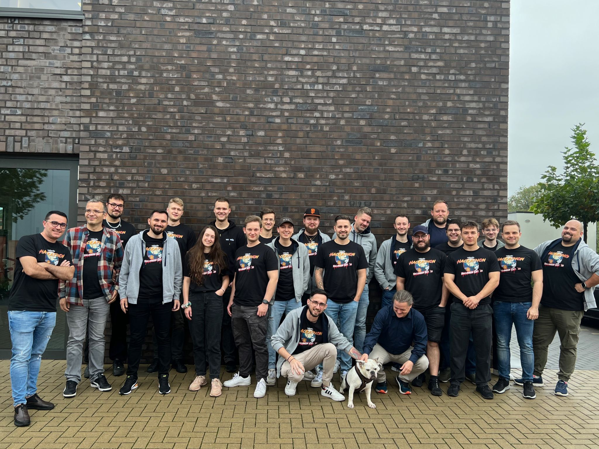
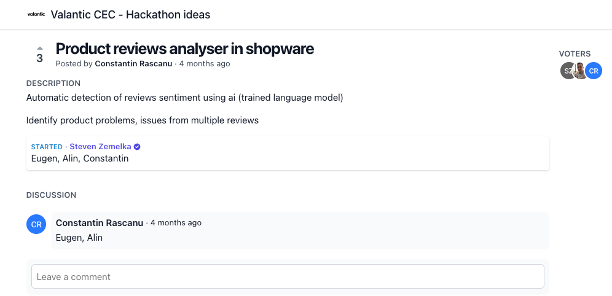
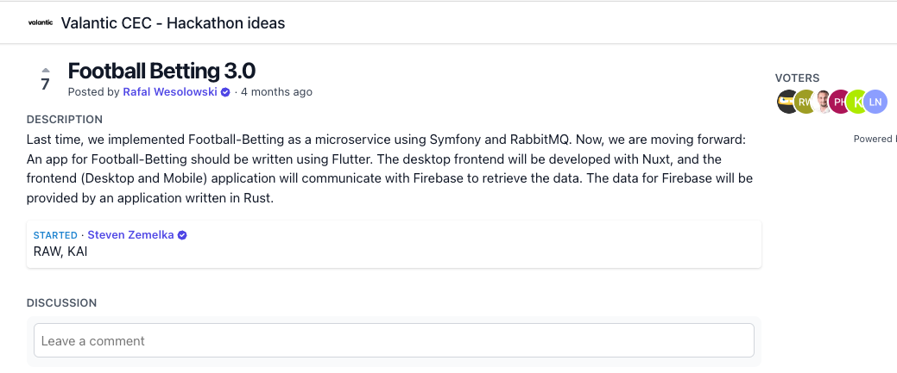
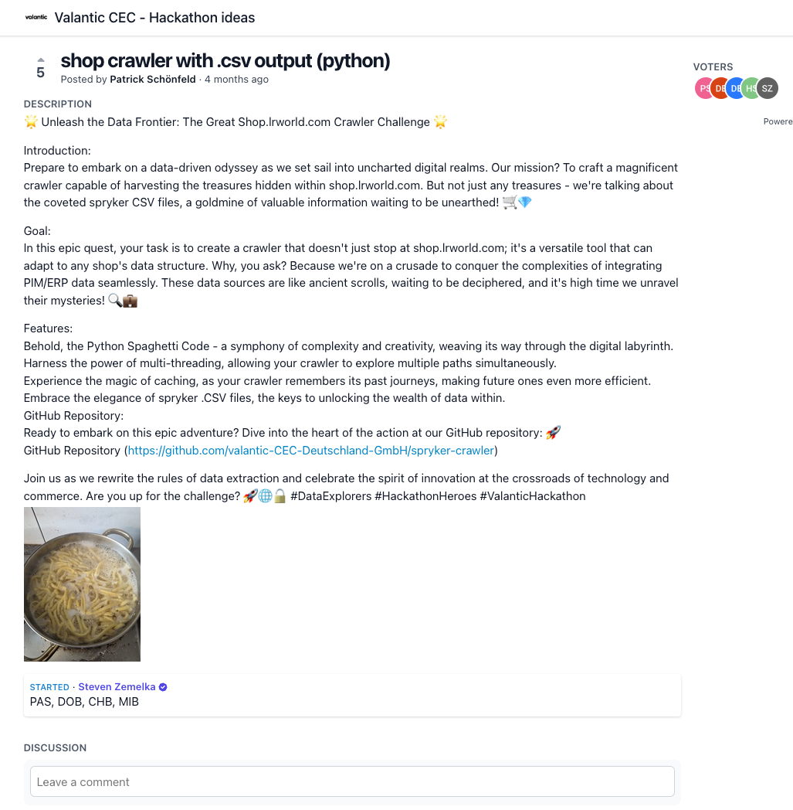

Halloween Edition '23 - Recap

Stats
- 26 Teilnehmer
- Bereits im One CEC Mindset, mit Kollegen aus Rumänien und Litauen
- Hot Topic AI im Fokus
- Positives Feedback
- Mehr Teilnehmer bei jedem weiteren Event
valantic-GPT - Base and Precursor for Vally

Shopware ChatGPT Product Review check

Football Betting 3.0

Spryker - Python Crawler
